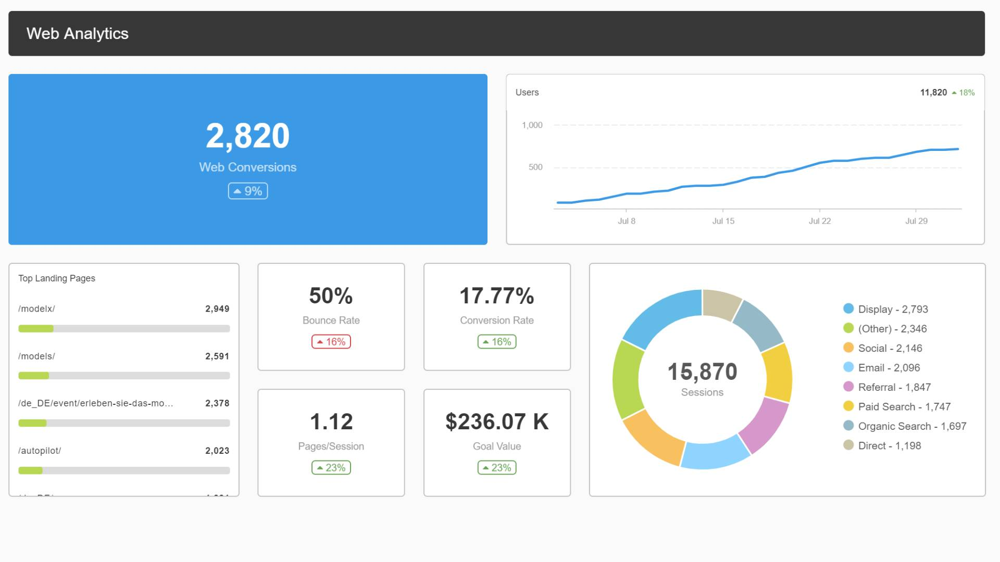

Fran Kennedy
Online Portfolio - RPA analyst
Dublin, IE
| Name | Fran Kennedy | |
| Date of Birth | November 1978 | |
| Address | Dublin, IE | |
| franeire@gmail.com | ||
| Phone | 087 2447218 | |
| Website | www.frankennedy.ie | |
I am an ICT professional, with an interest in Data analytics, automation and AI. My background has been in technical support, but recent exposure to robotics process automation has driven me to study machine learning and AI.
Some areas of interest to me based on this course are:
- Data Mining
- Neural networks
- Decison trees
Education
| Modules | |
|---|---|
| IMD | |
| Applied Machine Learning | |
| Operations Research | |
| Information Mgmt. | |
| EPA | |
| Data Analysis & Prog. | |
| Project | |
Countdown to completing BSc. in Computing with Machine Learning
| Modules | |
|---|---|
| Software Develoment | |
| Database Administration | |
| Networking | |
| Operating Systems | |
| Computer Architecture | |
| Statistics | |
| Project | |
My Skills
HTML
CSS
JavaScript
PHP
Office Skills
MS Excel
MS Word
PowerPoint
SharePoint
Work Experience
Company: N.S.S.O.
Position: Executive Officer
Dates held: January 2016 - present
I have been a member of the HRIS team within the NSSO since January 2016. We are responsible for administering the systems used by all civil servants.
Duties include
- Project Management
- Process Automation
- Development work
- Performance Management
Company: N.S.S.O.
Position: Clerical Officer
Dates held: January 2015 - December 2015
My previous role within the NSSO was as part of the reporting unit. We were responsible for running queries for HR units within government departments for analysis and research.
Duties include
- Database Administration
- Generating Reports
- Development work
- Performance Management
Company: Tech Dept.
Position: Helpdesk administrator
Dates held: April 2013 - December 2014
I held the position of helpdesk administrator for an IT company prior to joining the NSSO. The role was primarily helpdesk support, as well as on site support for our clients.
Duties include
- Technical support
- Configure and install hardware
- Project Management
- On site desktop support
Some of my projects
Automation
Create Dashboards
Case management analysis
Fantasy Football Predictor

Aside from having a lifelong interest in IT, there are many other areas I like to participate in during my downtime. Some of these are described below
Liverpool F.C.
I have been supporting Liverpool for as long as I can remember, and have lived through the long barren spells where we werent winning much, however the recent past has somewhat made up for this.
I try to get over to games as often as possible, but at least two to three times a year. As great as getting to occasionally see the mighty reds play in friendlies in the Aviva, nothing compares to a matchday in Anfield
Music
Music is also another huge part of my life, I listen to a wide variety of music, but one staple has stayed with me above all other, indie music, particularly from the Madchester era of the late 80's to early 90's in Manchester.
Bands like Stone Roses, Happy Mondays, Joy Division, New Order, The Charlatans. I can always listen to their music and have been to see them live on lots of occasions.
I've also learned how to play the guitar, although admiteddly I'm not very good, but it doesnt stop me enjoying it to relax.
Cycling
I've never been a big fan of gyms, so even though I would like to say I only eat all the right things and lift weights etc. five times a week, thats never been a part of my life.
Although not a pinnacle of fitness, I do try to balance this out by cycling to work when possible and also cycling two to three times a week as well. It is a good cardiovascular exercise and has managed to keep the wolves from the door up to this point.